In this post I will share some work I have been doing on Wave Digital Filters, or WDFs for short. WDFs allows one to digitize analog reference circuits in a way that retains the underlying topology, has nice numerical properties, allows for breaking up of annoying delay-free loops when digitizing and has a very nice modular way of dealing with non-linearities. I will not explain the basic WDF theory here but if you are interested the omnipotent paper on the subject written by Fettweis, the creator of WDF, or this tutorial on WDF should get you familiar with the topic.
Until very recently the WDF formalism has only worked on reference circuits that can be decomposed into parallel or series sub-circuits. Since many circuits in the wild have much more complicated topologies, the scope of reference circuits available for digital modelling using WDF has been very limited. Late last year there was a paper published called Wave Digital Filter Adaptors for Arbitraty Topologies and Multiport Linear Elements. In it this issue was addressed by showing how arbitrary topologies may be handled within the WDF formalism. That was achieved by some cleaver usage of the ubiquitous MNA method. In essence the method starts out with a reference circuit, extracts all series/parallel sub-circuits and uses the MNA method on the remaining components and connections. The trick is to allow active elements to clump up inside the non series/parallel adaptors, commonly known as R-type (rigid) adaptors and then figure out how the outcoming waves depend on the incoming ones (scattering matrix).
Now I will give two examples of how to use this new method on circuits previously unobtainable under the WDF formalism. To warm up I will start off by coming up with a WDF structure for the buffer amplifier.
Op amp buffer circuit
Following the steps developed in Wave Digital Filter Adaptors for Arbitraty Topologies.. I start out with a reference circuit, then approximate the op amp using a simple op amp model. I use a infinitely large resistor between the input poles so that I can use it when adapting for the port facing the voltage source (the only non-linear element that needs adapting).
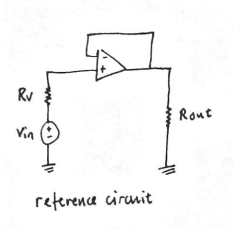
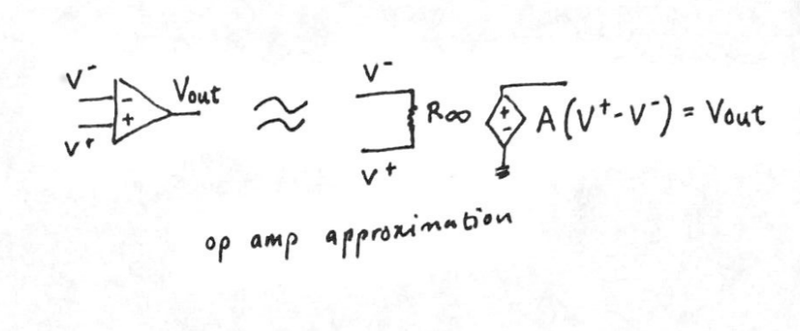
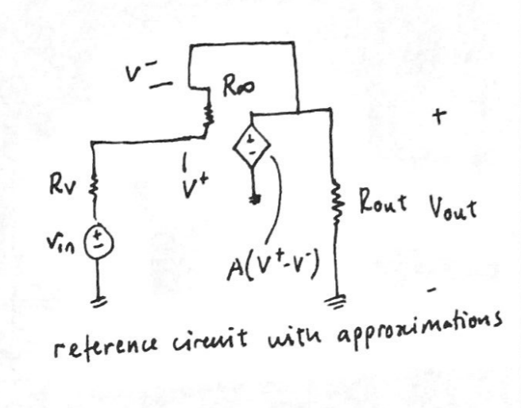
The next step is to form a so called replacement graph and find split components within it. The series/parallel adaptors that I find I remove from the graph and the remaining connections will fall inside the R-type adaptor we have to derive (it is impossible to further decompose the connections into more series/parallel connectors).
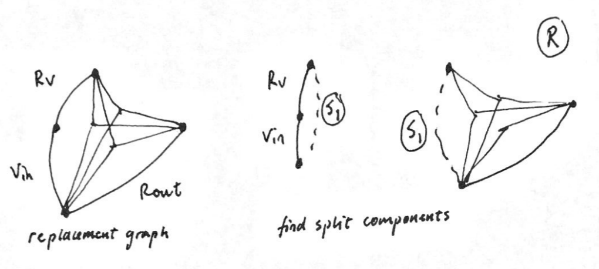
Now that we have the two WDF adaptors (series S, and a rigid one R) found in the approximated reference circuit we can find how incoming/outgoing waves are reflected when they reach the R-type adaptor. We do that by finding the scattering matrix which is obtainable by using Modified Nodal Analysis. I chose to adapt the scattering matrix to the input voltage source instead of using a resistive voltage source for simplicity's sake.
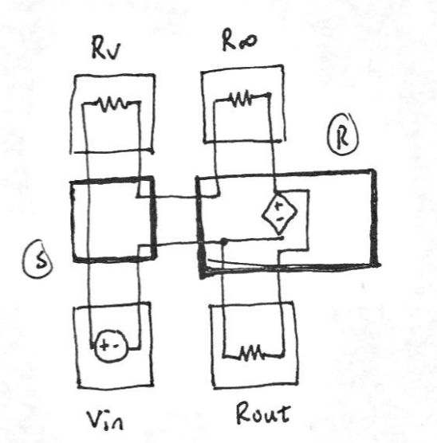 This is the underlying WDF structure.
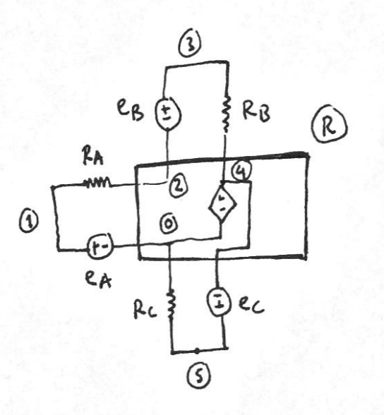 Place a voltage source and resistor on all ports and then populate the MNA matrix.
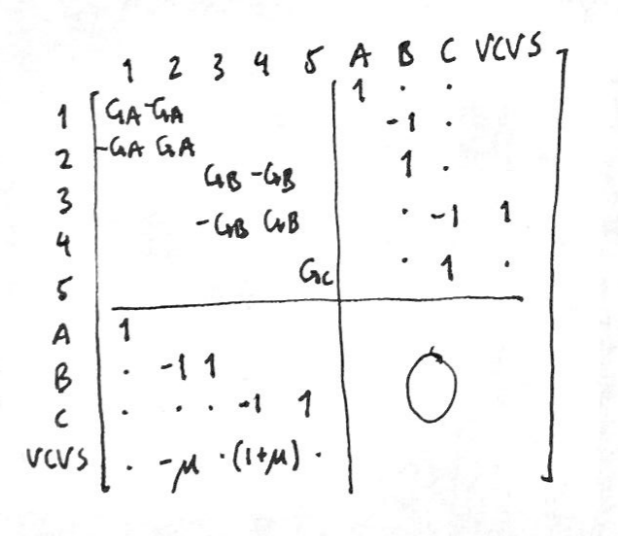 Modified Nodal Analysis matrix which we can use to figure out the scattering matrix.
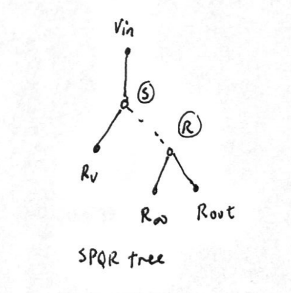 Here is the SPQR tree that indicates how the computation of the WDF structure can be done. In each iteration the waves travel from the lowest part of the tree all the way to the top and then back after the input signal has been injected.
Software implementation
Next I implemented the WDF model in Matlab code along with a simple LTspice simulation. Then I plotted the frequency response..
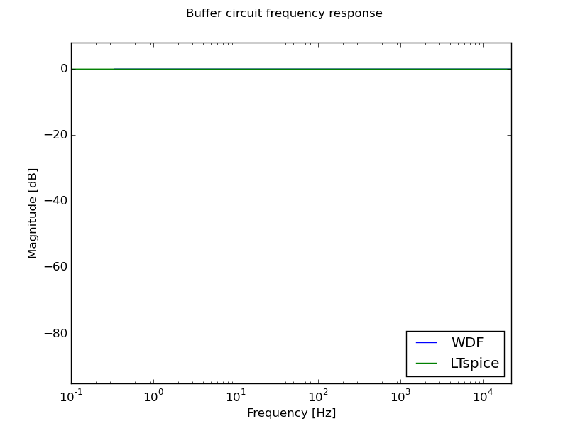
As expected the buffer circuit holds the input at unity for all frequencies and the frequency response is visually not different from the ground truth LTspice simulation.
Sallen-Key low pass filter
Next I move on to a bit more interesting reference circuit, the lowpass Sallen-Key filter. The steps are exactly the same as above.
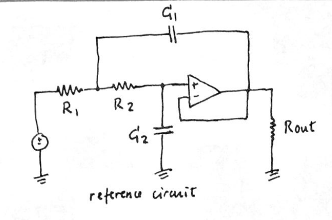 We start out with a reference circuit..
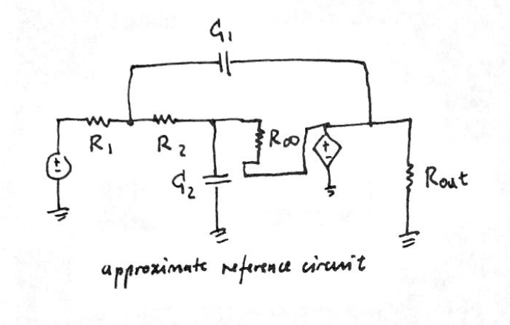 Approximate the op amp like before..
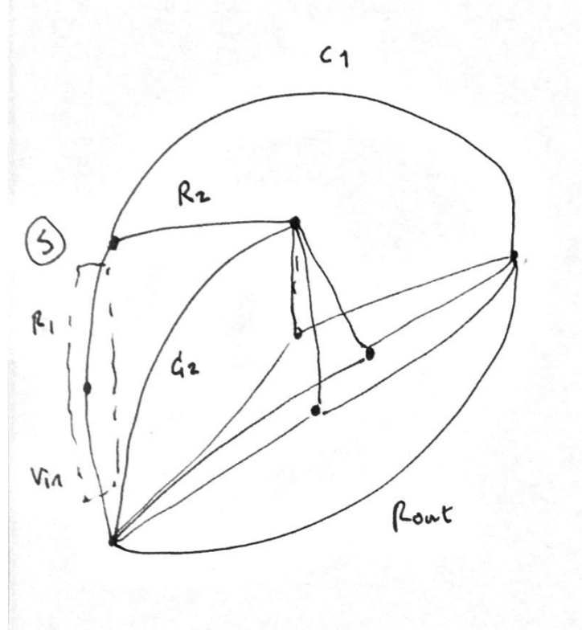 Generate the reference graph and find split components (again one series and one R-type adaptor)...
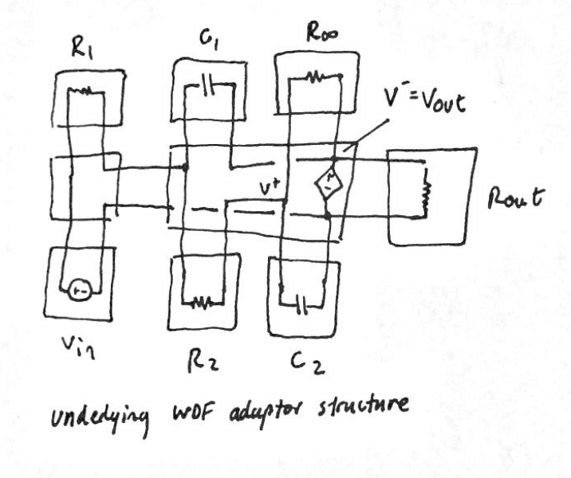
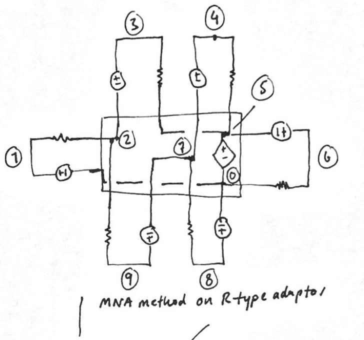
 Populate the MNA matrix and write out the SPQR tree.
Populate the MNA matrix and write out the SPQR tree.
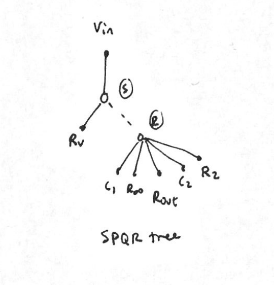
Software implementation
Again I coded up the WDF strucute and compared its frequency response with frequency response coming from LTspice.
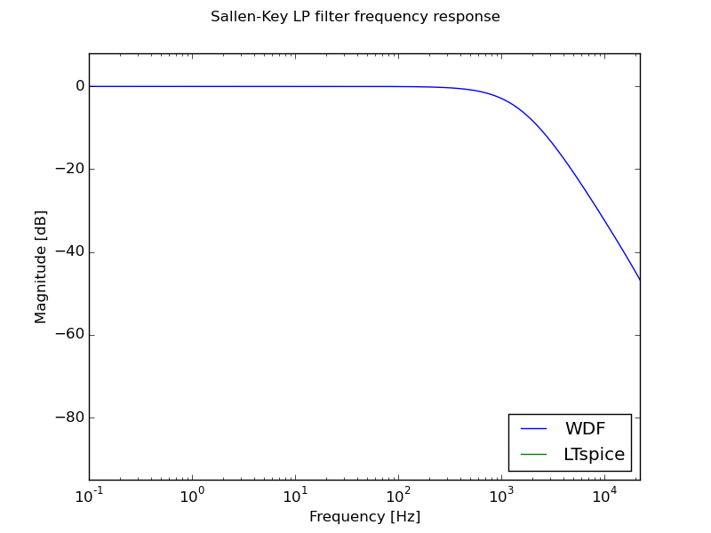
Demos
Just to give a simple demo I put a funk drum beat and put it through the Sallen-Key lowpass filter WDF structure with a cutoff frequency of ~1 kHz.
Final thoughts
There are still many circuits that are impossible to model using state-of-the-art WDF theory. An example are circuits that have global feedback (such as the MS-20 filter). Fundamental research in the field is active at the moment and hopefully within a few years those circuits will also be able to model using WDFs.
A big shout out goes to Kurt James Werner for help and support down the WDF rabbit.
Thank you for reading through and if you have any thoughts please share them in the comment section below.